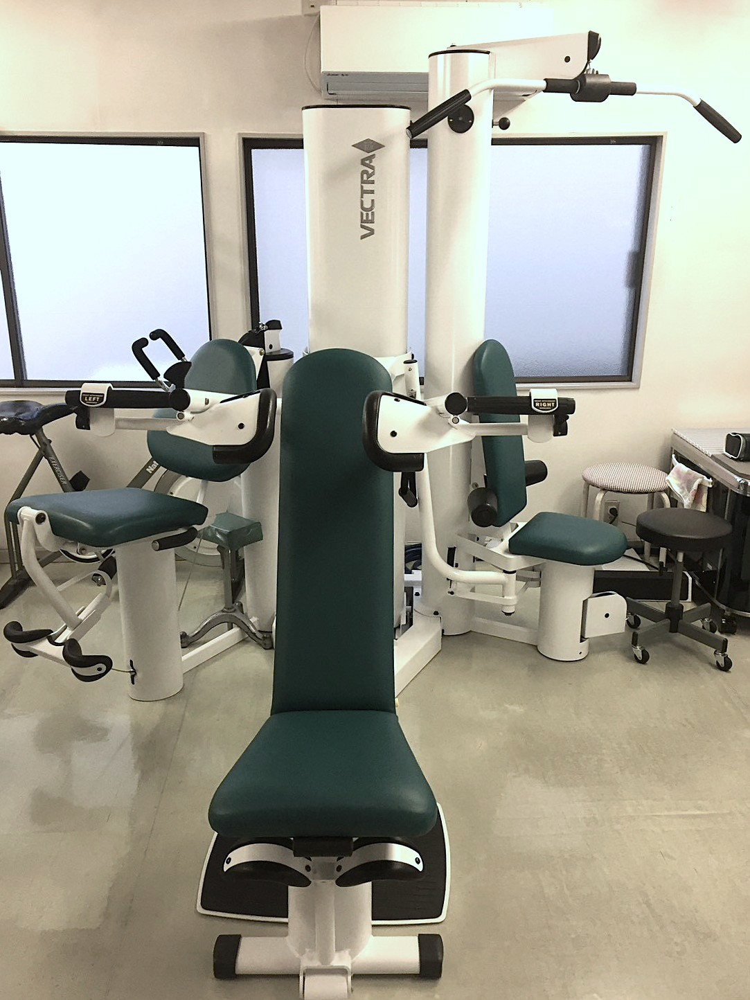
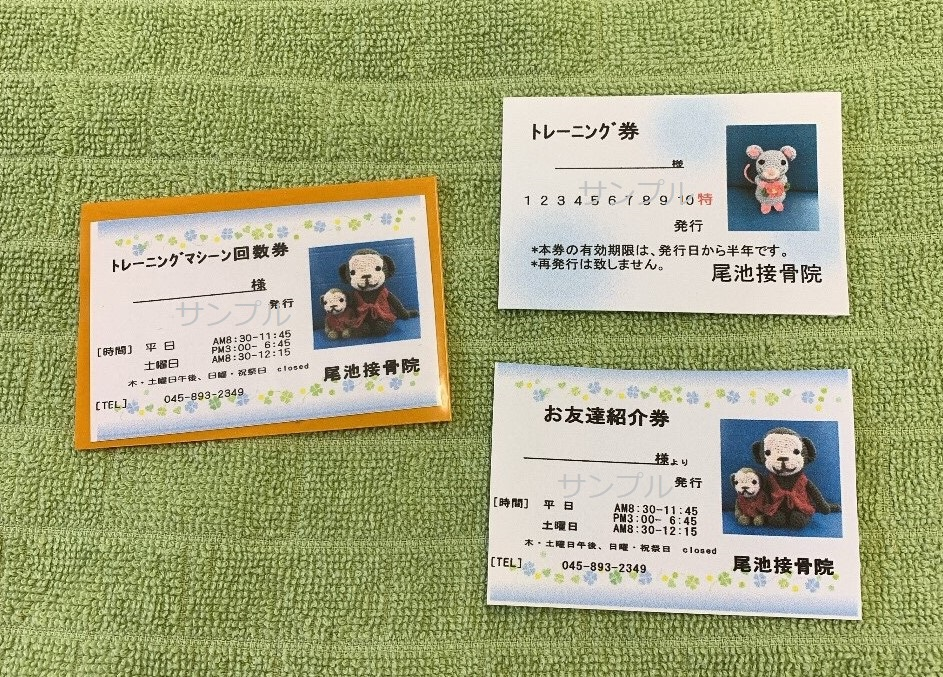
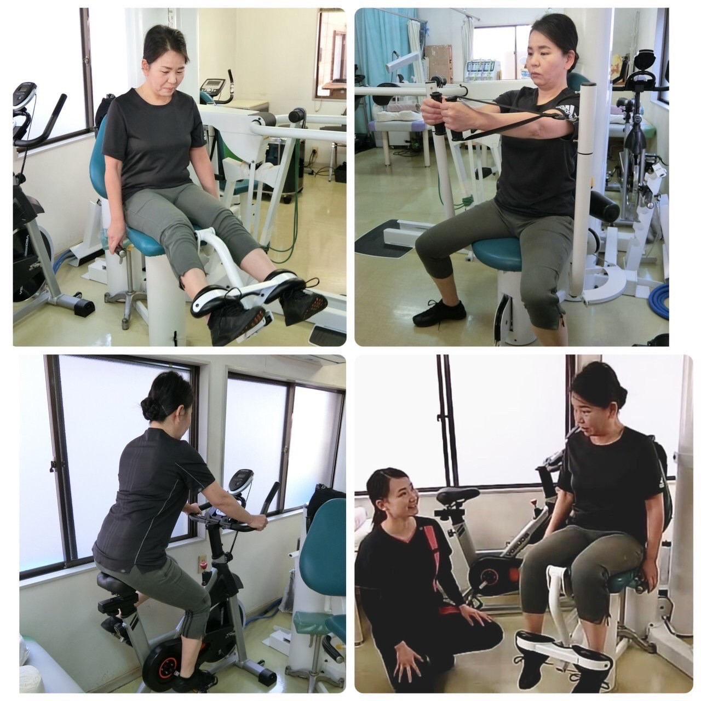
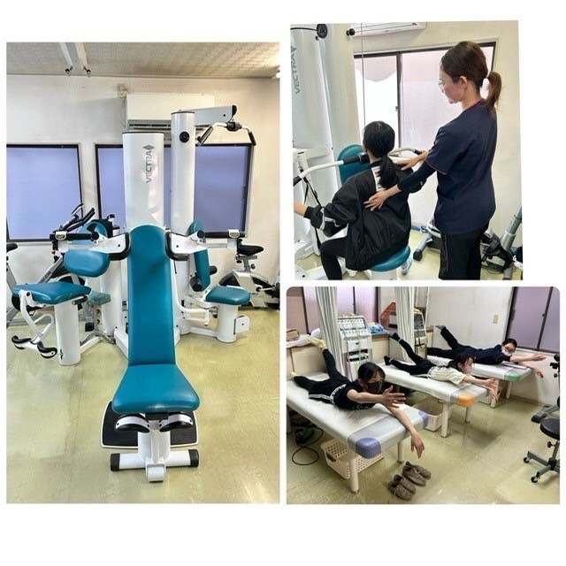
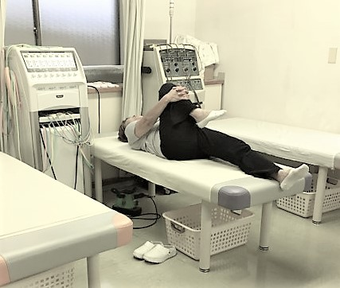

専 用 ト レ ー ニ ン グ マ シ ン を 使 っ て ト レ ー ニ ン グ
こ ん な 方 に オ ス ス メ

近頃、なんだか体力が落ちてきた…。
ウォーキングはしているけど、何か物足りない…。
そんな方にオススメです。
筋力アップ、基礎代謝アップして体を引き締めませんか？
効 果
・筋力アップ・強化
・基礎代謝アップ
・体力維持・向上
・機能改善（関節や筋の動きをスムーズに）
・姿勢の改善
・スタイルアップ（引き締め効果）
・ケガ・ロコモティブシンドロームの予防
など。
ど ん な 人 が 利 用 し て い る の ？
現在、中学生～８０代の方々が利用されています。
治療通院していなくても、トレーニングのみ利用が可能です。
ト レ ー ニ ン グ の 内 容
専用トレーニングマシンを使って、個人に合わせたトレーニングメニュープログラムを作成。
・トレーニングマシンを使った豊富なメニュー
・チュービング
・エアロバイク
・体幹バランスキューブ
さらに、定期的にカウンセリングを実施し経過観察しながら、ステップアップしていきます。
ジュニアクラスが出来ました！
ジュニアクラスでは、基礎体力や運動機能を高める内容で、部活やスポーツチームに所属している場合、そのスポーツをベースにメニューを作成していきます。中学3年生までが対象となります。
実際のトレーニングイメージ
費 用 は ？

個人指導付き（所要時間20分程度）
初回のみカウンセリング・登録料2,000円15分程度
１０回分(１回無料特典付)回数券購入必須
トレーニングの受付時間は接骨院受付時間と同様です。
※予約必須
トライアルクラス〔初回１セット〕20分程度
回数券（10回＋1回無料特典付）5,500円
初回のみカウンセリング・登録料2,000円15分程度
ジュニアクラス [中学生まで] 1回30分程度 回数券(10回＋1回無料特典付) 6,600円
スタンダードクラス 1回30分程度 回数券(10回＋1回無料特典付) 7,700円
トレーニングコース クラス分け
■トライアルクラス
■スタンダードクラス
■ジュニアクラス
■スペシャルクラス （週毎に時間を取れない方向け）
運動未経験者・経験者関係なく、トレーニングに慣れて頂く目的でトライアルクラスからのスタートとなります。
1セット（回数券10回+特典1回）終えた段階で、スタンダードクラス（ジュニアクラス）へ移行となります。またスペシャルクラスにも移行可能です。
ス ペ シ ャ ル ク ラ ス

週毎に時間を取れない方や一度に内容の濃いトレーニングをしたい方はこちらがオススメ。
1回 40分 4,000円
回数券 ５枚（特典付） 20,000円
初回のみカウンセリング・登録料2,000円
※予約必須
（来院者様が居る可能性があります。）
夜間 19時～、20時～ 要相談

★ 内 容 【全４０分】★・トレーニングマシン（最短約２０分）
＋
・ストレッチ
・マッサージ
・ エアロバイク（５分～）
時間内で、組み合わせ自由
時間は、接骨院受付時間と同様です。
ス ト レ ッ チ コ ー ス

体の柔軟性を高めることで、筋肉の緊張が解け、血液循環が良くなります。
そして、動きが良くなり、転倒や怪我の防止にも繋がります。
ストレッチコースとは、道具を使わずベッド上で出来る簡単なストレッチを行います。
効果は、体の柔軟性を高める、関節可動域を拡げる、筋肉の緊張緩和、血流改善、リラックス、疲労回復、転倒・怪我の防止等・・・
どうやっていいかわからない、体操教室の内容についていけない、そんな方にオススメです！！
個々のメニューを作成し、個人指導致します。
接骨院に通院していなくても、ストレッチのみ利用出来ます。
回数券（１０回＋１回無料特典付） 6,600円
初回 カウンセリング・登録料 2,000円
予約必須
時間は接骨院受付時間と同様です。
ま ず は 体 験 ！
できるかどうか不安。
続けられるか不安。
そんな方には、まずやってみていだだきたい！
トレーニングの体験は 体験１回 無料
パーソナルコースの体験は 体験1回 1,000円 所要時間 約30分
[トレーニングマシン＋（ストレッチorマッサージorエアロバイク）]
お気軽にお問合せください。
お 申 込 み
お電話（045-893-2349）又は、公式LINE からお申込みください。
からお申込みください。